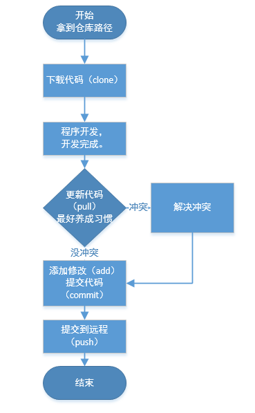
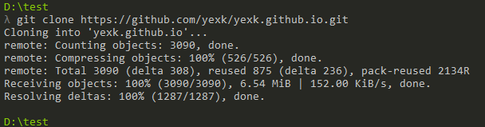
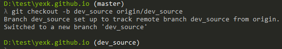
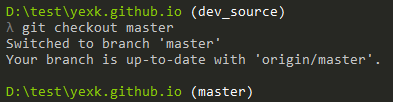
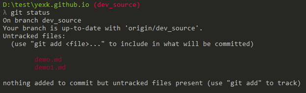
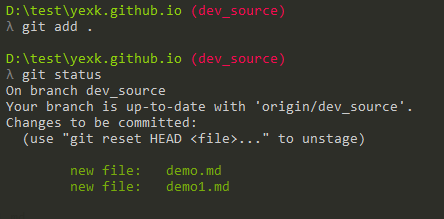
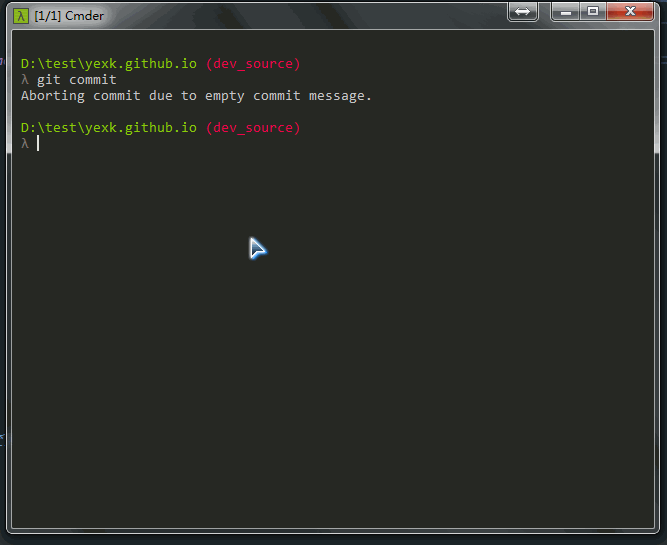
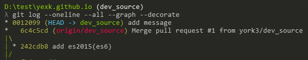

git命令网上和
git --help都能看到很多。但新手很多情况下都分不清啥时候该用哪个命令，应该用什么命令。接下来提供一套流程想关的命令教程。
git仓库管理
这里笔者用我的仓库做例子。一般公司开发的时候都无非是如下几个流程。

当前流程这个不是一定的，笔者习惯使用这个流程开发代码。
开始（下载代码）
如果是GitHub上的代码，那么会有 https 或者 SSH 地址，入笔者这里用我的仓库做案例，就可以在GitHub拿到这个链接。
| 链接方式 | 地址 |
|---|---|
| https | https://github.com/yexk/yexk.github.io.git |
| ssh | git@github.com:yexk/yexk.github.io.git |
下载（克隆）代码语法：
1 | git clone 地址 |
图例：

坐等下载完成，就会出现仓库名称对应的目录，如:笔者用的是 yexk.github.io 仓库，那么就会创建这个目录，我们进到这个目录就可以看到我们仓库地址对应的代码了。
代码下完了，有时候会涉及到切换分支，注意：这里的切换分支不是必须的。
切换分支语法
这里分成第一次切换分支，和第二次以后切换分支，
1 | 第一次切换分支 |
第一次切换分支：

如果第二次还执行该命令会提示：
fatal: A branch named 'dev_source' already exists.
第二次以后切换分支：

同上，如果在当前分支继续切换到当前分支会有提示：
2
Your branch is up-to-date with 'origin/master'.
提到分支，那就不得不提一下分支的删除和查看了，新增和切换分支差不多。
| 方法 | 命令 |
|---|---|
| 新增 | git branch 分支名称 |
| 删除 | git branch -d 分支名称 |
| 查看 | git branch -a(查看本地和远程) 或 git branch(只查看本地分支) |
更新代码
笔者认为这一步很有必要存在，虽然不是必须的，但为了保持不影响其他人提交好的代码，养成一个好习惯会比较好。
更新代码的语法：1
git pull
代码冲突
谁都不想自己辛辛苦苦写的代码还到最后提交不了，但工作难免会遇到。如果是个人仓库，这一步就可以跳过了。自己开发很难冲突的，如果能冲突，那说明也是牛X。
一般冲突了会出现 CONFLICT 相关的字样。那这个时候就要处理冲突问题了。1
2
3
4
5
6
<<<<<<< HEAD
xxxxaaa # 这是来自当前版本的修改
=======
xxxx # 这是更新下来的修改
>>>>>>> master
我们手动编辑、保存。保持代码的原有功能。
冲突的情况还是有很多种情况，但总体的流程都是差不多的：修改冲突文件 -> 添加冲突文件 -> 提交。
添加代码
我们修改好的代码需要添加到缓存区。只有添加到缓存区的代码才能够被提交。
添加代码
添加代码前我怎么知道我有什么代码被修改了呢？
查看修改代码1
git status
图例：

这里面就可以看到我们修改好的文件信息了。这里有两个新增的文件分别是
demo.md和demo1.md
1 | 添加文件。单个或者多个，用空格隔开就行。 |
图例：

已经把代码添加到缓冲区了，接下来就只负责提交代码就好了。
提交代码（提交到本地）
git 是多服务器机制。会先把代码提交到本地。如果是团队开发，这一步代码仅仅是把代码提交到了自己的本地的服务器上，别人是看不见的。需要再推送到远程服务器才是真正的提交完成。
1 | git commit |
图例：

提交代码有点类似于编辑一个提交文件，把需要的信息写到文件保存退出就可以提交成功了。
提交到远程服务器
当提交本地服务器以后就直接提交到远程服务器就可以了。1
git push
直接执行提交就行。这一步冲突的概率比较小，如果冲突了就回去解决冲突，重新来一步就行。
结束
至此git仓库简单的管理流程就算走完了。提交完成了后需要查看提交记录可以用这个命令
1 | git log --oneline --all --graph --decorate |
图例：

git知道这些命令就差不多可以应对工作场景了，再遇到其他问题再通过其他问题继续搜索解决就行。